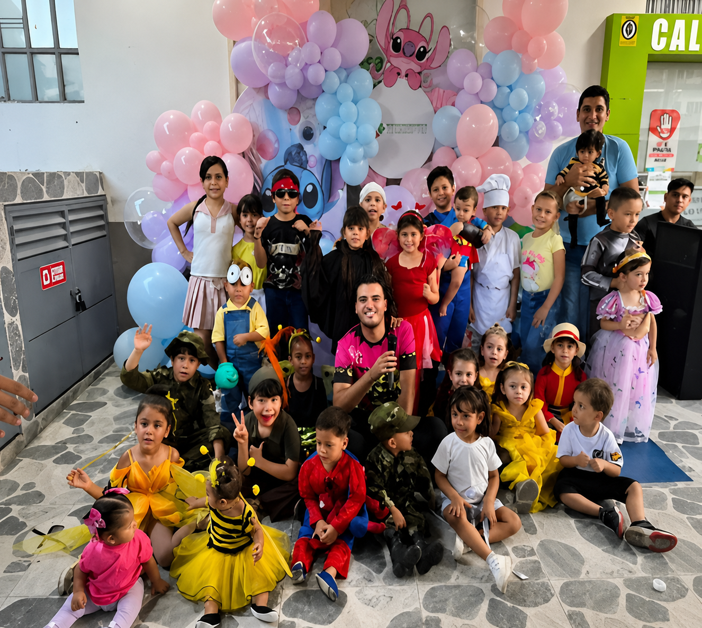

¿Qué es Progresandito?
A través del programa, fomentamos la importancia de la cultura del ahorro en niños y jóvenes desde 0 hasta 17 años.
Gracias a nuestros convenios, pueden acceder a descuentos y financiación para escuelas de formación cultural, deportiva, académica, vacaciones recreativas, cursos de oratoria, natación y más.

Descarga la foto de tu hijo
Si tu hijo participó en nuestras actividades de Progresandito 2026, aquí puedes descargar su foto del recuerdo.
Descargar fotoSolo necesitas el número de documento del niño
Eventos Especiales
Celebramos momentos únicos con nuestros pequeños ahorradores
Regreso a Clase
Campaña con entrega de kits escolares y aprobación de crédito para útiles escolares.
Febrero - MarzoDía del Niño
Evento en el mes de octubre con entrega de detalles, fotos y actividades recreativas.
OctubreVacaciones Recreativas
Acceso a descuentos en escuelas de formación cultural, deportiva y académica.
Todo el añoBeneficios de Progresandito
Ahorro desde $30.000
Los niños pueden empezar a ahorrar desde los 30 mil pesos mensuales.
Afiliación fácil
Si eres adulto y estás afiliado, puedes afiliar a un niño a Progresandito.
Convenios exclusivos
Descuentos en formación cultural, deportiva, académica y más.
Formación en valores
Fomentamos la solidaridad, el compromiso y la responsabilidad desde niños.
Afiliar a un niño
Para afiliar a un niño a Progresandito, el representante (adulto) debe estar afiliado a COOPSERPROG.
Estar afiliado
El adulto responsable debe ser asociado activo de COOPSERPROG.
Diligenciar formulario
Completa el formulario de afiliación para el niño en nuestra app o en oficina.
Iniciar el ahorro
El niño empieza a ahorrar desde $30.000 y accede a todos los beneficios.